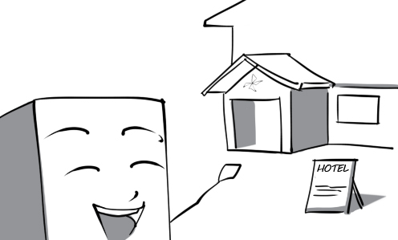
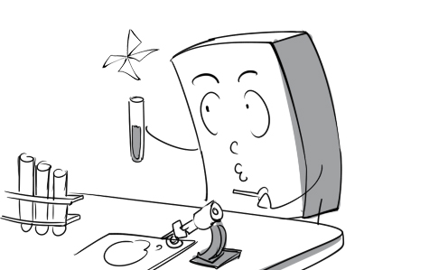
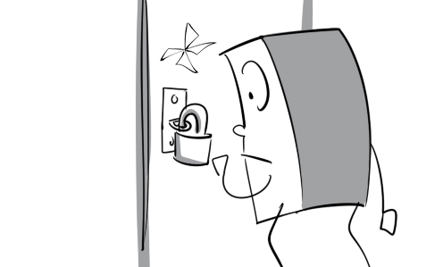
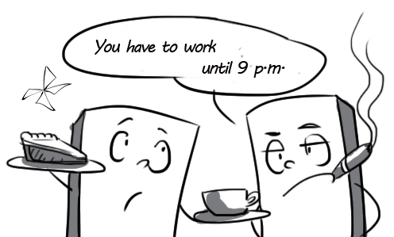

abandon: Fearing further attacks, most of the population abandoned the city.
abbreviate: In writing, the title Doctor is abbreviated to Dr.
absorb: If you stay out in the sun too long, UV radiation will be absorbed into your skin and causes skin cancer.
accommodate: I was accommodated in this hotel during my business trip.

accomplish: Surprisingly, the students accomplished the 30-minute test in only less than ten minutes.
accompany: The patient does not need the nurse to accompany him to the bathroom.
adapt: Tom is very healthy, which is why he can adapt to all kinds of weather.
analyze: The student is analyzing water samples in the laboratory.

anticipate: The director anticipates that the share price will increase tomorrow.
antipathy: Mrs. Green has deep antipathy towards her stepson. She never treats him well.
attempt: Peter attempted to finish the difficult test on time.
balance: The tightrope walker can balance on a piece of rope expertly.
benefit: We are raising money for the fund which will benefit homeless children.
bewilder: James was bewildered by his daughter's demand; he did not know how to please her.
boost: The government implemented a national plan to boost public health.
breach: The police officer pulled Peter over because he breached the road rules.
browse: Mr. Thomas browsed through a sports magazine while waiting for his wife.
circulate: Blood circulates throughout the body to keep the organs functioning properly.
claim: Mr. Ferguson claimed that he owned this house.
clarify: The teacher uses funny illustrations to clarify his lecture.
coincide: Peter had his birthday timed to coincide with a holiday weekend so that all his friends could come.
collapse: The building collapsed in the earthquake, which killed nearly 100 people.
collide: The two cars collided head-on at the crossroad because of thick fog.
compensate: The worker was compensated for his work injury.
complement: The piano is complemented by the violin. Together they make the sonata sound very beautiful.
component: My father is trying to assemble these components into a television set.
compress: Peter folded his shirt and compressed it into a small bag.
concur: I absolutely concur with his statement.
contaminate: The atmosphere has been contaminated by exhaust fumes released from factories.
contribute: My school contributed a lot of necessities to the national campaign for disaster relief.
defeat: The outstanding player defeated his opponent easily in the final.
defer: His flight was deferred because of some technical problems.
destroy: The whole town was completely destroyed by the hurricane.
determine: The date of our wedding will be determined by our parents.
distort: Angie was just a little angry with Brad, but a newspaper distorted it to say that they had a really big fight.
domesticate: Don't worry! Lions in the circus have been domesticated, they won't eat you.
endorse: The president fully endorse the recommendations of the minister of finance.
endure: These hardy bulls can endure even the rough winter weather.
energize: I was energized to study by the love of my girlfriend.
enhance: This highway project will enhance our city's image.
erode: The walls have been eroded by natural agents after 1500 years.
exaggerate: Don't fully believe his stories. He always exaggerates them to make them more interesting.
examine: Mrs. Green examines every garment very carefully.
execute: My company is executing a survey on the customers.
exemplify: The chef's dishes perfectly exemplify Chinese cuisine.

exert: Ivan exerted all his controlling power to make Dmitry sign the contract.
expand: Peter reads a lot of books to expand his knowledge.
express: Finally, Andrew got enough courage up to express his feelings for Mary.
falsify: The dishonest student is trying to falsify his academic transcript.
foster: The dentist tried to foster healthy dental habits in his patients.
fundamental: Peter doesn’t even know fundamental mathematics knowledge.
glimpse: From the corner of my eye, I glimpsed the man walking out of the store with a gun.
gorgeous: The bride looked really gorgeous on her wedding day.
gradual: There has been a gradual change in his face over the last ten years.
graduate: Kate graduated with first-class honors from medical school last year.
grasp: The professor grasped my hand and shook it warmly.
guarantee: Please guarantee that the door is completely locked before you leave!

habituated: Over centuries, Africans have become habituated to living in a hot dry environment.

hazardous: Knife throwing is such a hazardous performance.
host: Brazil is going to host the 2014 World Cup.
hostile: The two athletes are openly hostile towards each other.
immigrate: Lots of Vietnamese people immigrated to US from Viet Nam after the war.
innovate: The company has successfully innovated new products.
invalidate: The policeman invalidates his driving license because he has violated traffic laws so many times.
inverse: Her appearance is in inverse proportion to her personality.
irritate: I was really irritated by my colleague's behavior.
justify: I am trying to justify myself to the trash collector.
legislate: The government decided to legislate against smoking in public places.
memorize: Adele is trying to memorize this song's lyric.
modernize: The audio player has been modernized continuously since it was invented.
modify: You should modify the amount of chili in the recipe, it’s too hot.
narrate: The cosmopolitan is narrating his adventures in the countries he has visited.
necessitate: His new job necessitated him working until 9 p.m. everyday.

neglect: David neglects his studies and just concentrates on how to make money.
nominate: The singer was nominated in many categories for the 52nd Grammy Awards.
obligate: Lisa's Parents obligated her to marry Tom although she did not love him at all.
occur: A technical problem occurred in the middle of the play.
penetrate: The sword penetrated the abdomen of the samurai warrior.

perceive: I perceived a little cat hiding among garbage bags.
prohibit: Jimmy's mother prohibits him from swimming in this lake because it's very deep.
qualify: This candidate was extremely well qualified for the job.
recruit: My company needs to recruit two janitors right now.
remote: It is very dangerous to travel to remote areas.
renowned: The renowned director was recognized by his fans when walking down the street.
resist: It's hard to resist an invitation from such a handsome man.
separate: The candies were separated into three equal portions.
stimulate: Alcohol seemed to stimulate his craziness. He starts to sing very loudly now.
succeed: John succeeded his father as CEO of the company.
suspend: Our departure is suspended until tomorrow because of the storm.
tame: The circus performer is trying his best to tame the dangerous tiger.
transcend: The message of this movie is that love transcends age differences.
transcribe: The interview was recorded and then transcribed.
transfer: My friend has successfully transferred from Oxford University to Harvard University.
ultimate: After a long discussion, the ultimate decision has been made by President Obama.
undertake: In some chemistry lessons, students are asked to undertake simple experiments.
utter: Peter suddenly uttered something while everybody were working in silence.
vaporize: Water starts to vaporize at 100°C.
vary: The prices of apples vary according to their quality.
yield: After a long discussion, I finally yielded to his arguments and did what he wanted.
zone: The main area of the city center was zoned for the Miss World contest.